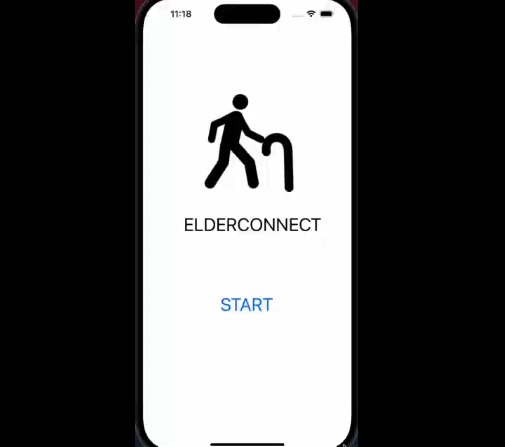

My Projects

2025
WRO Future Engineering Robot
An autonomous vehicle engineered for obstacle navigation and computer vision tasks...
Read Details →
2025
Aero Indicator System & Audio-Tactile Feedback System
HMGICS Techbot Challenge Entry...
Read Details →
2025
Greenhouse Temperature Controller
School project where I created an automated system capable of monitoring temperature in a greenhouse...
Read Details →
2024
ElderConnect
School project where my team and I created an app for lonely elderly...
Read Details →